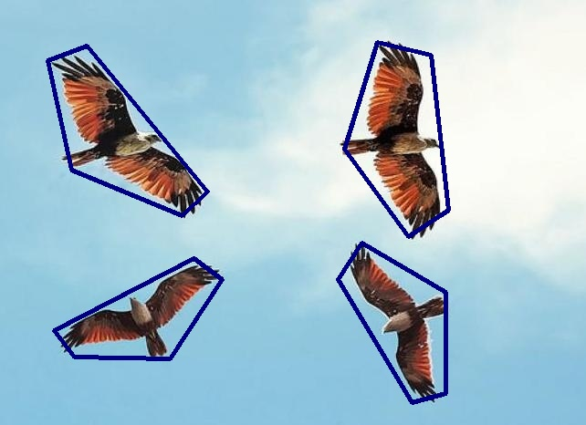

<style>
    .instructions {
        white-space: pre-wrap;
    }

    .instructionsImage {
        display: inline-block;
        max-width: 100%;
    }

    .demoVideo {
        display: inline-block;
        max-width: 100%;
    }

    .testImage {
        display: inline-block;
        max-width: 80%;
    }

    .testImageDiv {
        display: inline-block;
        max-width: 100%;
    }

    .testButtonDiv {
        display: inline-block;
        max-width: 100%;
    }
</style>
<crowd-tabs>
    <!-- Tab1:Introduction -->
    <crowd-tab header="Introduction">
        <h2>What is Recurring Pattern?</h2>
        <p>
            A <b>Recurring Pattern (RP)</b> is an ensemble of similar yet not necessarily identical <b>"instances"</b>
            in an
            image.
        </p>

        <p>
            The term of <b>"instances"</b> refers to a visual area which distinctive features that could be undoubtedly
            grouped or segmented together. Each <b>recurring pattern</b> consists of two or more similar instances.
        </p>
        <center>
            
        </center>

        
        <p> Here are some examples of images containing <b>Recurring Pattern (RP)</b>:</p>
        <div class="col-1">
            
            <p> An example image contains <b>ONE</b> recurring pattern. </p>
        </div>

        <div class="col-1">
            
            <p>
                Another example image contains <b>ONE</b> recurring pattern. Notice that the instances could be
                deformed and scatter, as long as they are similar with each other.
            </p>
        </div>

        <p> Besides <b>single</b> recurring pattern, it is trival to find <b>multiple</b> recurring patterns in
            an image. </p>
        <p> Here are some other examples:</p>

        <div class="col-1">
            
            <p> An example image contains <b>TWO</b> recurring patterns. Notice that even the image is taken in a
                <b>projective view</b>, there still exists recurring patterns.
            </p>
        </div>

        <div class="col-1">
            
            <p> An example image contains <b>a lot of</b> recurring patterns. How many recurring patterns can you
                observe? </p>
        </div>
    </crowd-tab>

    <!-- Tab2:Instruction -->
    <crowd-tab header="Instruction">
        <h2>How to Label Recurring Pattern?</h2>
        <p>
            If you find a group of similar objects could be viewed as a recurring pattern, please click the button
            <b>Add</b>.
        </p>

        <p>
            After you do this, you should see a new class of <b>Recurring Pattern</b> on the right side of your web
            page.
            Select this class, and label the contour of each object one by one.
        </p>

        <p>
            Do this repeatedly, then you could successfully finish our task of recurring pattern labeling.
        </p>

        <center>
            
        </center>
    </crowd-tab>

    <!-- Tab3:Demo -->
    <crowd-tab header="Demo Video">
        <h2>Demo Video</h2>
        <p>
            Here is a short video shows how to label an example image contains two recurring patterns.
        </p>

        <center>
            <video class="demoVideo"
                   src="https://sagemaker-studio-f5iy3bqk9dc.s3.us-east-2.amazonaws.com/instructions/demo_0702.mp4"
                   type="video/mp4" controls>
                <p>Video not available on current browser.</p>
            </video>
        </center>
    </crowd-tab>

    <!-- Tab4:Simple Test -->
    <crowd-tab header="Simple Test">
        <h2>Try a Simple Test!</h2>
        <p>
            <br>Here are two examples of labeling recurring pattern on a same image.</br>
            <br>One of them is correct, and the other one is incorrect.</br>
            <br>Try to figure out which one is labeling correctly!</br>
        </p>
        <div class="testImageDiv">
            

            <crowd-button id="testButton1">Correct?</crowd-button>
        </div>

        <div class="testImageDiv">
            

            <crowd-button id="testButton2">Correct?</crowd-button>
        </div>
    </crowd-tab>
</crowd-tabs>